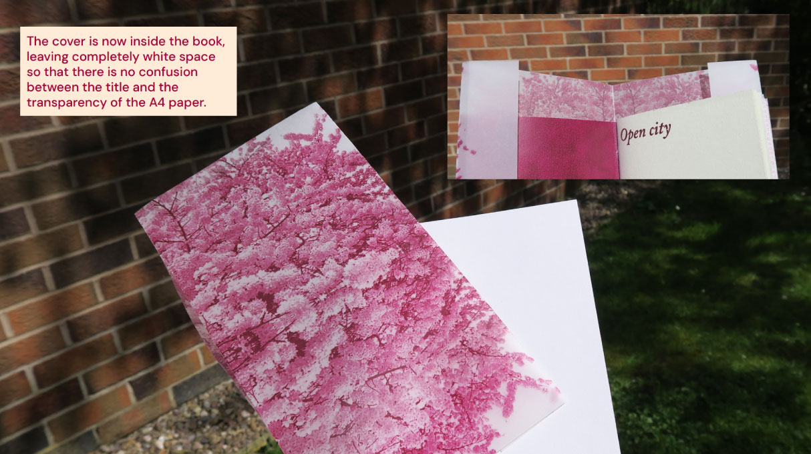

Open City: Second edition
Open City: Second Edition es una reinterpretación editorial del texto de Emma Cocker, desarrollada dentro del módulo Graphic Design in Production en Sheffield Hallam University. Esta nueva versión mantiene la esencia del proyecto original: explorar la ciudad como partitura cotidiana, donde el caminar, detenerse y observar revelan capas de significado escondidas en la rutina.
En esta edición, el proceso se enriquece al incorporar referencias materiales directamente extraídas de la ciudad de Sheffield, como fotografías de su vegetación en primavera —superpuestas en papel semitransparente— que aportan textura visual y conceptual. La estructura editorial se mantiene en formato A5, pero ahora envuelta por una cubierta A4 translúcida, pensada para jugar con el ritmo, la opacidad y la idea de capas urbanas y sensoriales.
El diseño incluye tres tipos de papel (suave, texturizado y translúcido), y el lomo se transforma en un asa, permitiendo cargar la publicación como una bolsa, cuestionando el objeto editorial como simple libro. Las palabras y frases del artículo original flotan entre capas, evocando la tensión entre lo individual y lo colectivo, lo estático y lo dinámico.
Open City 2.0 no es solo una publicación: es una coreografía visual sobre el habitar, una reflexión sobre el andar como gesto político y poético. La ciudad, aquí, se lee con los pies, se escucha con la vista y se siente con la memoria.
